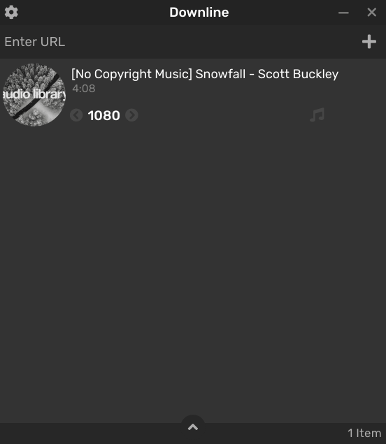

Downline
Free and open-source media downloader for YouTube and many other sites

Features
- Download video and audio from several sites
- Choose video and audio quality (with support for 4K videos)
- Convert audio to multiple formats (mp3, aac, m4a and more)
- Convert video to multiple formats (mp4, webm, mkv)
- Pause and resume downloads
- Download entire playlist and channel
- Download and embed subtitles
- Download multiple files simultaneously
- Works on Windows, Mac and Linux